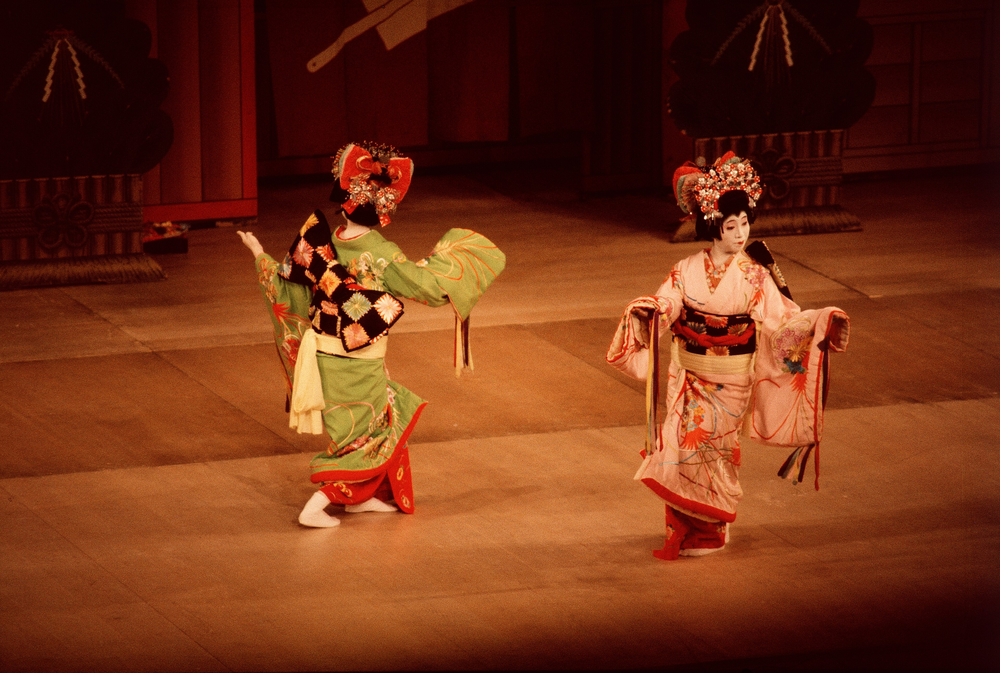
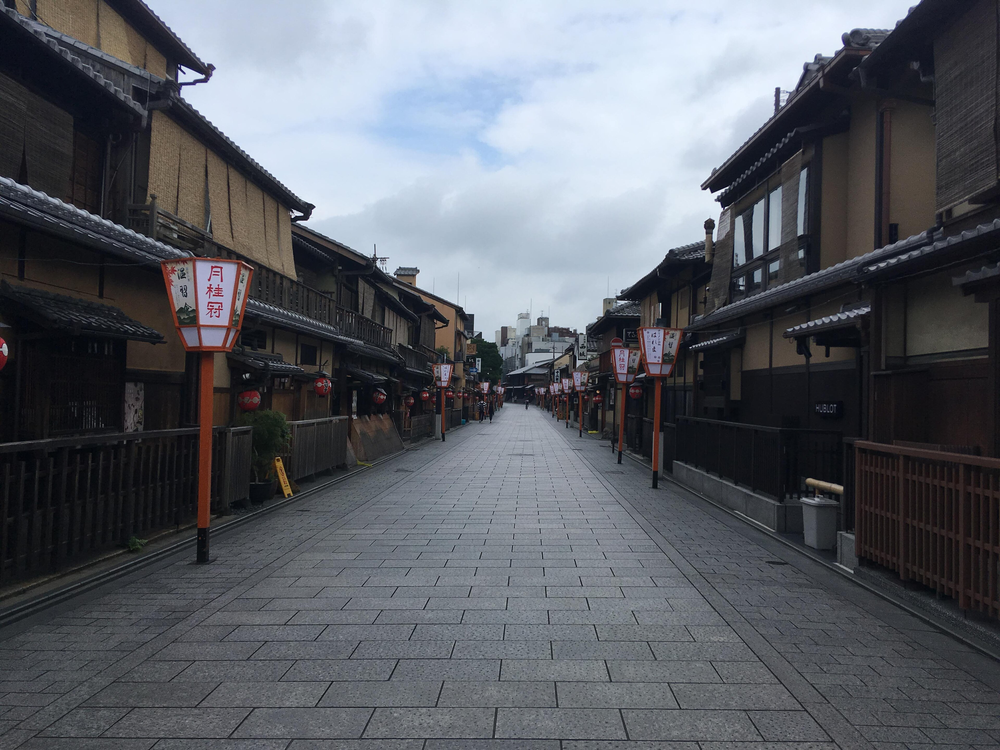
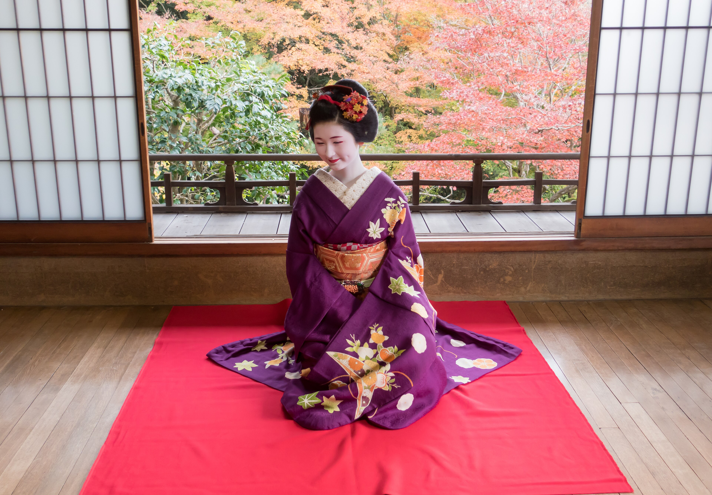
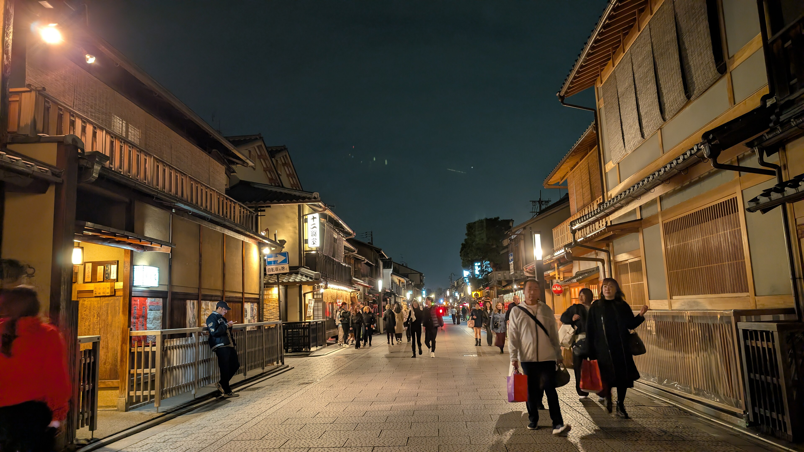

スクロールして探索

伝統と規律
侍の道・不滅の精神
侍の精神と不滅の美学
武士の道・武士道精神
「真の勝利とは、己に打ち克つこと。刃は激しき炎より鍛えられ、静寂なる自制をもて振るわれる。」
単なる神話や映画の伝説を超えて、歴史上の侍たちは学者であり、歌人、禅の実践者、そして優れた戦略家でした。7世紀以上にわたり、彼らの重んじた「武士道」の精神は、日本の美意識、刀鍛冶、城郭建築、そして人々の高潔な道徳観を育みました。
義
義（GI）
正義と道義
勇
勇（YU）
勇気と果敢
仁
仁（JIN）
慈悲と思いやり
礼
礼（REI）
礼節と敬意
誠
誠（MAKOTO）
誠実と至誠
名誉
名誉（MEIYO）
名誉と誇り
忠義
忠義（CHUGI）
忠誠と献身
厳選された日本の名所
日本の至宝・10大名所
映画のような空撮映像、絶品郷土美食、悠久の歴史スポット


文化の真髄
心に響く日本の伝統
魂に響く日本の伝統と美意識
茶道
01 / 禅の静寂と心
茶道
茶道・一期一会
千利休が大成した16世紀の禅の思想に根ざす「茶道」は、抹茶を点てる所作を通じて今この瞬間に心を研ぎ澄ます瞑想の儀式です。「和・敬・清・寂」の四規に基づく精神が息づいています。
「一期一会」— 一生に一度の出会いとして、誠心誠意のおもてなしを。

桜
02 / 自然と無常の美
桜花と花見
桜花と「もののあわれ」
春、日本列島を桜前線が駆け抜けます。単なる景観の美しさを超え、桜は散りゆく美しさに心を寄せる「もののあわれ」の情緒を体現しています。
千年以上にわたり、天皇、歌人、庶民に至るまで、満開の桜の下に集い「花見」を楽しむ伝統が大切に受け継がれています。
.png)
建築
03 / 木組の技と調和
和風建築
木と紙の呼吸・和風建築
一本の釘も使わずに組み上げられる五重塔や町家は、地震の揺れを逃す精緻な「木組」の技によって支えられています。障子や襖は室内と庭園の四季を優美につなぎます。
宮島の厳島神社から京都の静穏な楼閣まで、建築は自然の環境と調和しながら呼吸を共にしています。

書道
04 / 筆墨の芸術
書道
筆と墨の一瞬・書道
「書道」は単に文字を書くことではなく、精神を集中させる動の瞑想です。和紙に墨が触れた瞬間、決して消すことも修正することもできません。一筆一筆に書き手の呼吸、リズム、心の境地が宿ります。
文房四宝と呼ばれる「筆」「墨」「硯」「紙」を通じて生み出される、一瞬の美の結晶です。

武道
05 / 名誉と鋼の魂
日本刀と武士の歴史
不滅の誇り・日本刀と甲冑
日本刀は「武士の魂」と称されました。玉鋼を何度も折り返し鍛錬することで、強靭な硬さと折れない柔軟性を併せ持つ至高の美が生まれます。
今日でも、居合道や剣道などの古武道、金沢や会津などの歴史ある城下町、そして礼節を重んじる心の中に侍の誇りが受け継がれています。

芸道
06 / 花街の雅と修練
芸者の世界
一生分の稽古・一瞬の所作
京都·祇園の花街で脈々と受け継がれる芸の世界。舞、三味線、茶道、華道、会話に至るまで、幼い頃から研鑽を積み「おもてなし」の美学を究めます。
お茶屋が結ぶ「一期一会」の一夜 — 華やかさの裏に、日々の厳しい稽古と伝統への献身があります。

花街の美学
芸者・雅の極み
祇園の石畳に息づく、一期一会の美と所作
祇園
花街の心・一期一会
「一瞬の所作に、一生分の稽古を。」— 花街に流れる不易の心
京都・祇園の花街で脈々と受け継がれる芸者の世界は、単なる華やかさではありません。幼い頃から研鑽を積み、舞・三味線・茶道・華道・会話に至るまで、あらゆる芸を究めることで「おもてなし」という美学を完成させます。
舞
京舞
扇と袖で四季を描く、井上流の京舞。

装 着物と結髪西陣織の着物と、季節を映す簪。
音
三味線と箏
置屋で舞・三味線・作法を日々磨く。

客 お座敷文化お茶屋が結ぶ、一期一会の一夜。
体験型工房
名匠の筆使い
バーチャル書道体験・あなたの筆跡和